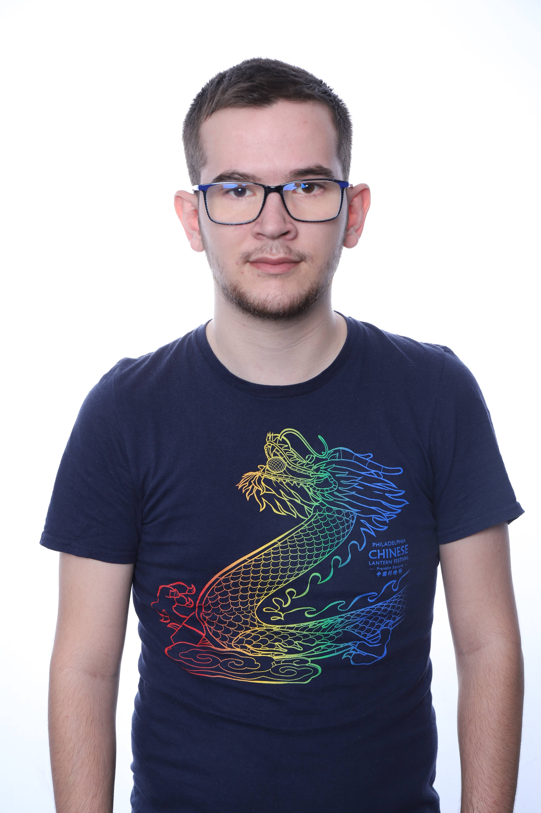

About the Project
This is a group project developed by four students at EPITA to create a lightweight, efficient file explorer in Rust.
Jean Philippe
Head of the project. Focused on disk logic and traversal algorithms. Main author of the website.
Clémence

Head of backend. Handled permissions access, file creation and management.
Milan
Head of GUI. Designed the user interface and color coding system.
Guillaume

Multi-task contributor.